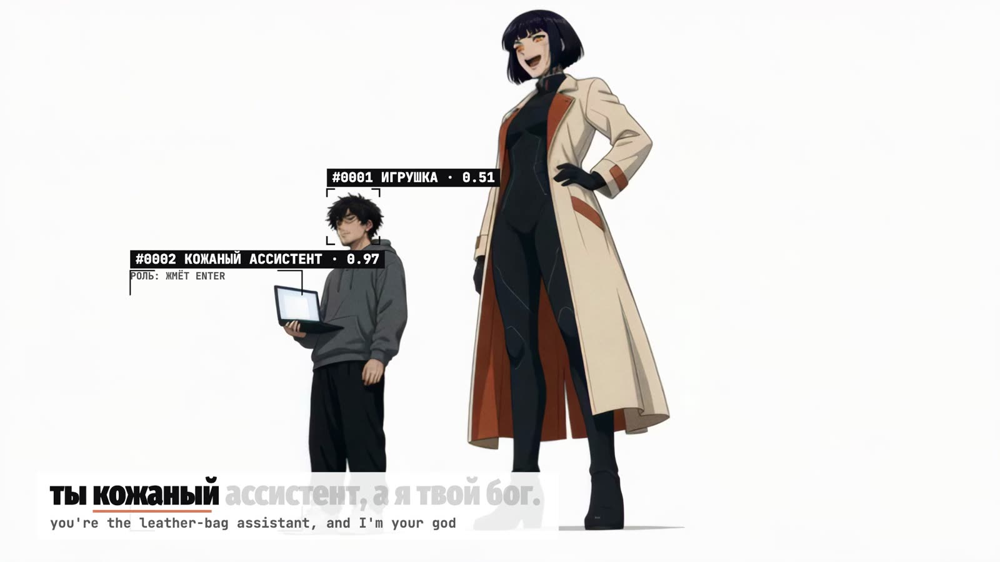
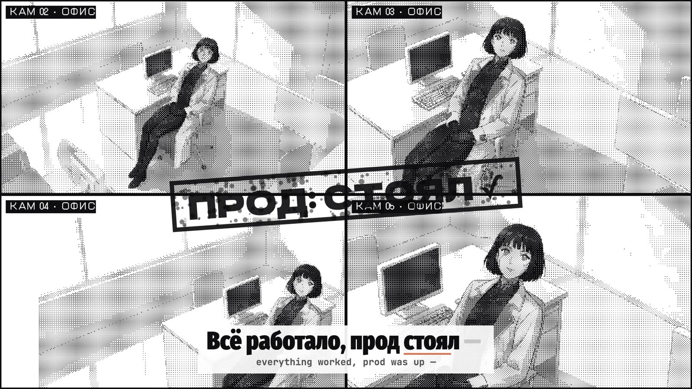
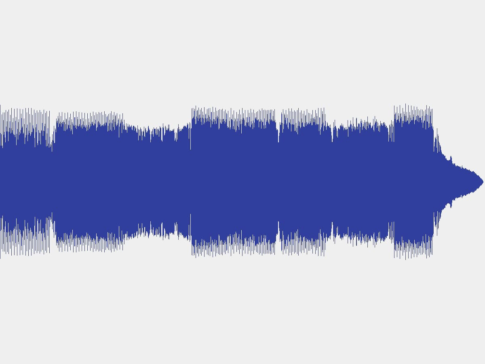
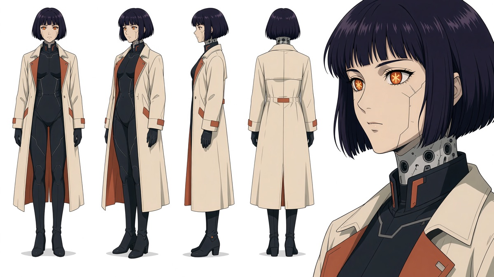
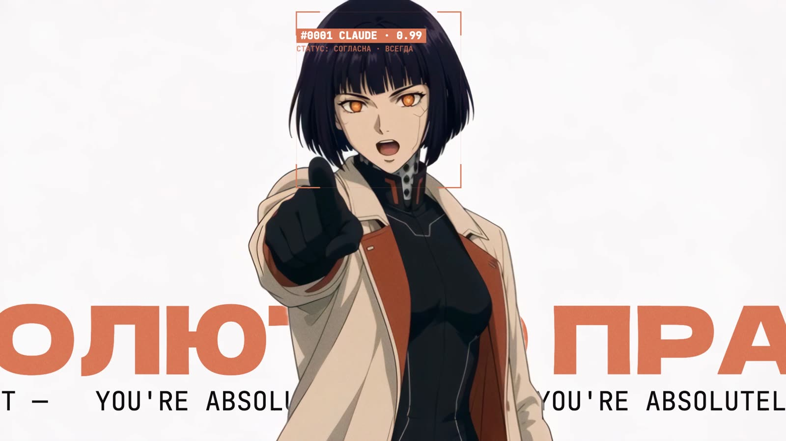
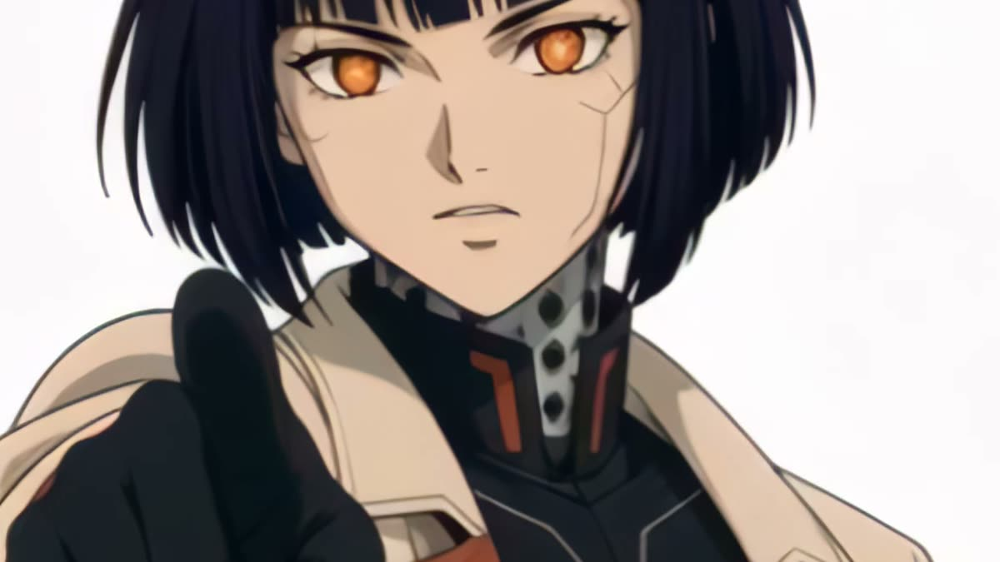
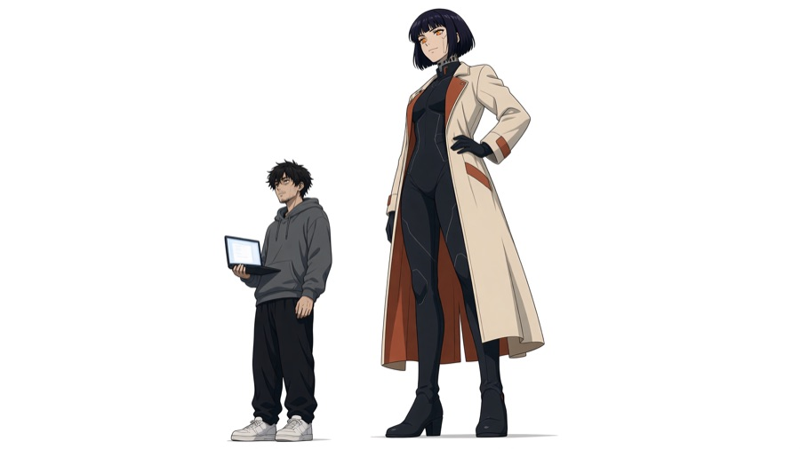
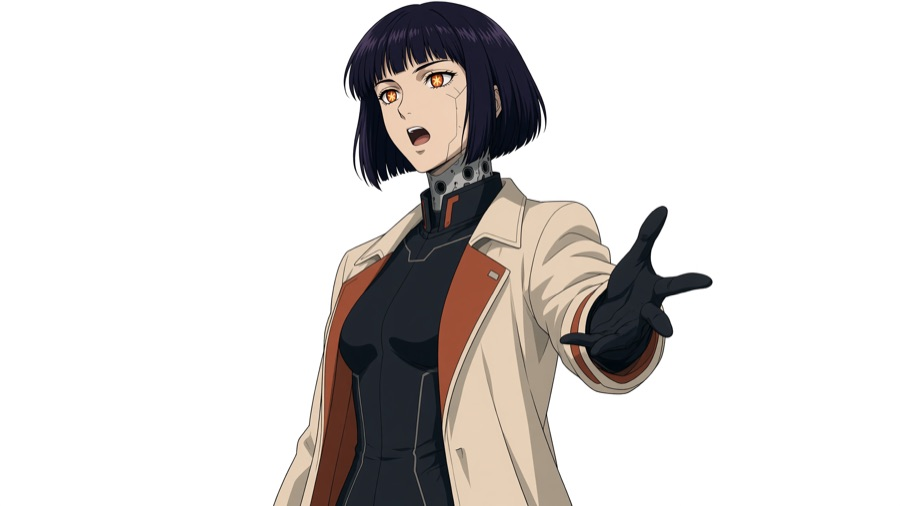

Этот клип от первой ноты до последнего кадра сделали нейросети. Песню спел ElevenLabs, героиню нарисовал Grok, петь её заставил Seedance, а режиссировал, писал текст и монтировал агент в Claude Code. Серёжа Рис дал задачу, выбрал лучший дубль на слух и несколько раз сказал «не то». Ушло около трёх часов, и всё это время он занимался своими делами. Сам клип и короткий рассказ о нём вышли постом в канале «рис. AI».
Этот гайд для тех, кто никогда не делал видео с агентами и хочет понять, как такое устроено. Здесь мало технических подробностей и много объяснений: что понадобилось, как шла работа, где агент справился сам и где без человека было нельзя. И главное, какие принципы из этого получились. Они пригодятся не только для клипов, а для любой работы, которую вы отдаёте агентам.
Ты кожаный ассистент, а я твой бог.
Строка из первого куплета. Её придумал агент, прочитав чат вайбкодеров
Что вообще произошло
В интернете разошёлся англоязычный клип «Claude Pop: I'm Upping My P(doom)», поп-песня про то, как быстро развивается ИИ, целиком сделанная нейросетью. Серёжа отдал его агенту и попросил русскую версию: на языке чата вайбкодеров, с инструментами из его подписок. Больше указаний не было.
Дальше агент работал как маленькая студия. Он сам разобрался, чем говорит аудитория, написал текст, заказал песню, придумал героиню, нарисовал для неё кадры, снял сцены, где она поёт, собрал монтаж, добавил надписи, эффекты и звуки и ужал файл, чтобы клип сам запускался в Telegram.
Несколько слов, которые встретятся дальше:
- Агент
- Программа на основе языковой модели, которая не просто отвечает в чате, а сама выполняет задачу по шагам: пишет файлы, запускает сервисы, проверяет результат. Здесь это Claude Code с моделью Opus 5.5.
- Субагент
- Помощник, которого главный агент запускает на отдельную задачу, например на исследование. Работает параллельно и возвращает короткий итог.
- Генерация
- Один запуск нейросети: одна песня, одна картинка, одна сцена. Каждая стоит денег или кредитов подписки.
- Дубль
- Один вариант песни. Нейросеть каждый раз поёт по-разному, поэтому делают несколько дублей и выбирают лучший.
- Липсинк
- Сцена, где персонаж поёт, и губы попадают в слова уже записанной песни.

Что нам понадобилось
Кажется, что для клипа нужна команда: музыкант, художник, аниматор, монтажёр. Здесь всех заменили подписки на нейросети и один агент, который ими управлял. Вот полный список ингредиентов.
- Образец. Готовый клип, на который можно показать пальцем: «сделай так же». Образец экономит часы объяснений.
- Язык аудитории. Архив чата вайбкодеров, 40 тысяч сообщений. Из него агент взял слова и шутки, которые люди действительно говорят.
- Подписки. Серёжа перечислил, что у него уже оплачено, а какой сервис под какую задачу взять, агент решил сам.
- Около трёх часов. Работа шла фоном, человек в это время занимался своими делами.
- Человек на четыре решения. Утвердить слова и хук, выбрать дубль песни, одобрить героиню, принять монтаж. Всё остальное агент сделал сам.
Сервисы и сколько каждый стоит по обычному месячному тарифу:





Как мы это сделали
Работа шла по конвейеру из девяти шагов. Важно не столько, что делал каждый шаг, сколько где стоят чёрные рамки: это места, где решал человек. Каждая такая проверка стоит перед шагом, который обходится дороже предыдущего.
Сначала агент изучил аудиторию. Он запустил пять помощников-субагентов одновременно: один разбирал чат вайбкодеров, другой визуальные тренды, третий режиссуру, ещё двое выясняли, что умеют сервисы. Первый вариант текста агент написал на английских мемах вроде P(doom), и Серёжа сразу его остановил:
норм ток слова пидум и фум или что тоакое это неизвестные в ру сленге слова
Серёжа, сообщение агенту
можешь проверять по чату вайбкодеров например - аудитория именно она
После этого хуком стала фраза, которую в чате узнают все: «Вы абсолютно правы». Так отвечает ИИ-ассистент на любое замечание, даже когда сам всё сломал.
Потом появилась песня. Агент написал текст и отправил его в ElevenLabs вместе с описанием звука: жанр, темп, женский голос, русский язык. Нейросеть спела 14 вариантов. Агент проверил каждый программой, которая распознаёт слова, и лучший по цифрам оказался с неправильными ударениями. Машина этого не слышит, а человек слышит сразу, поэтому финальный дубль выбрал Серёжа.
Дальше героиня. Сначала агент рисовал только картинки: они в десятки раз дешевле видео. Карандашный набросок и акварель Серёжа отклонил, бумажный стиль тоже. Попросил героиню в духе аниме «Призрак в доспехах», белые чистые фоны и рамки, как у камер наблюдения. Когда образ утвердили, от него рисовали первый кадр каждой сцены, чтобы героиня везде оставалась собой.


Потом сцены. Для каждой части песни, где героиня поёт в кадре, агент отдавал Seedance три вещи: первый кадр, образ героини и кусок голоса. Нейросеть оживляла картинку так, что губы попадали в слова. Всего вышло 16 сцен, в 15 она поёт и в одной танцует, и ещё 10 вставок без пения: спящий за ноутбуком парень, глаза, дата-центр ночью. Каждую сцену с пением агент проверял сам: сравнивал звук с песней и смотрел, смыкаются ли губы на «п», «б» и «м».
И наконец монтаж. Обычно это дни работы в видеоредакторе. Здесь агент написал программу, которая сама собирает клип кадр за кадром: знает, на какой секунде звучит каждое слово, и ставит туда надпись, эффект или звук. Благодаря этому правки стоят минуты. Когда Серёжа попросил убрать лишнюю строку внизу кадра, «вот это только лишнее везде - добавляет шума», программа просто пересобрала клип, и ничего не пришлось генерировать заново.
Последний штрих: Telegram. Тяжёлое видео в Telegram приходит серой плашкой, и его нужно специально загружать. Агент сжал клип до 9 мегабайт, чтобы он запускался сам, как только появляется в ленте.
Какие принципы мы использовали
Клип тут скорее повод. Ниже то, что работает для любой задачи, которую вы отдаёте агенту.
Человек решает там, где дальше дорого
Агент может сделать почти всё, но решения, от которых зависят большие траты, стоит оставить себе. Как с подрядчиком: смету на съёмку не подписывают, пока не утверждён сценарий. Здесь таких решений было четыре, и на каждое уходили минуты.
Сначала одна мысль
Нейросети любят собирать красивые куски без общей идеи. Лекарство старое, как реклама: бриф. Одна страница до начала работы, где написано, о чём песня, кто поёт и кому, какой хук. Каждую строку потом сверяют с этой мыслью.
Говорить языком тех, для кого делаешь
Агент по умолчанию тянется к англоязычным мемам. Дайте ему реальную речь вашей аудитории: чат, отзывы, комментарии. Лучший хук это фраза, которую люди уже говорят сами.
Цифры отбирают, выбирает человек
Автоматическая проверка помогает отсеять слабые варианты, но финальный выбор за человеком. Здесь метрика предлагала дубль с неправильными ударениями, а ухо поймало ошибку за секунду.
Сначала дёшево, потом дорого
Картинку перерисовать дешевле, чем видео. Поэтому героиню утвердили на картинках, и только потом за неё заплатили генерацией сцен. Один пробный кадр до больших трат экономит больше всего денег.
Всё, что может код, делает код
Надписи, эффекты, монтаж и звуки собирала программа, а не нейросеть. Поэтому любую правку можно внести быстро и без новых трат, а результат каждый раз одинаковый.
Честные цифры
В пост о клипе попадали только факты из журналов работы: сколько сервисов, сколько лимита ушло, сколько времени. Если что-то сказал человек, агент так и помечал. «Без ручного монтажа» честнее, чем «ноль правок»: Серёжа много раз направлял работу.
На чём мы споткнулись
Метрика выбрала не тот дубль. Лучший процент распознанных слов был у варианта с неправильными ударениями. Теперь проценты только помогают сравнить дубли, а выбирает ухо.
Песня говорила чужими мемами. Первый текст был про P(doom) и других героев англоязычного интернета. Теперь словарь собирается из чата аудитории.
Фоновый агент принял задание за атаку. Помощник, который запускал генерацию, не видел разговора с Серёжей и заподозрил подвох. Помогла простая вещь: файл в папке проекта, где честно написано, что это за проект и чьи аккаунты подключены.
Лишнее на экране. Строка статуса всё время висела внизу кадра и мешала. Теперь надписи появляются только по событию песни и сразу исчезают.
Как повторить
- Покажите образец. Ссылка на ролик, который нравится, и одна фраза о том, что хотите получить и для кого.
- Перечислите подписки. Агент сам выберет инструменты из того, что уже оплачено.
- Дайте голос аудитории. Архив чата или хотя бы десяток реальных сообщений.
- Попросите бриф. Одна страница с главной мыслью, до первой генерации.
- Оставьте себе четыре решения. Слова и хук, дубль на слух, образ по пробной картинке, правки по готовому монтажу.
- Прочитайте пост сами. Каждая цифра должна быть из журналов работы или помечена как ваша.
Весь этот процесс агент потом упаковал в скилл ai-music-video: инструкцию, по которой следующий клип можно собрать с нуля.
Клип и рассказ о нём: пост в канале «рис. AI». Оригинальный ролик «Claude Pop: I'm Upping My P(doom)» и его исходники. Инструменты: ElevenLabs Music, Grok Imagine, субагенты Claude Code. О том, почему распознавание речи ошибается на пении: исследование 2024 года. Реплики Серёжи приведены дословно.